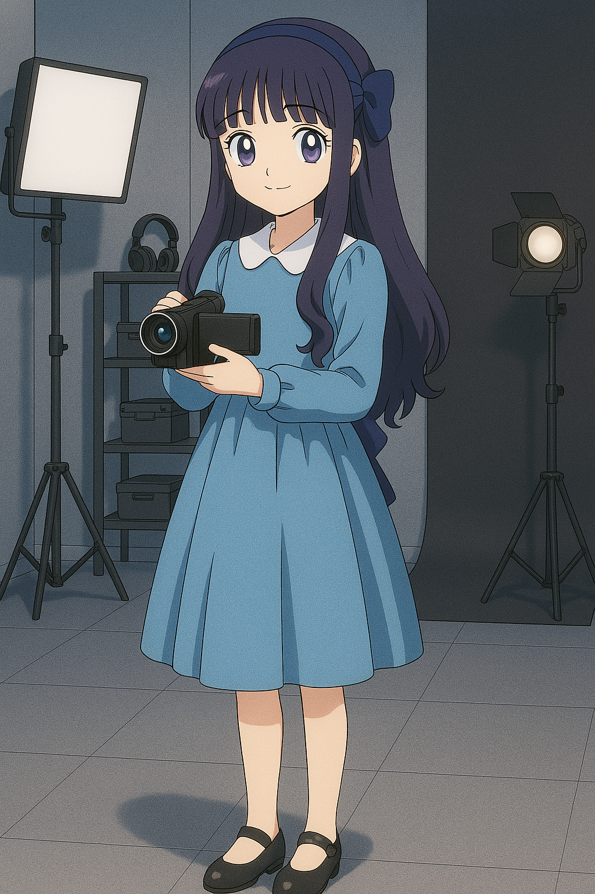
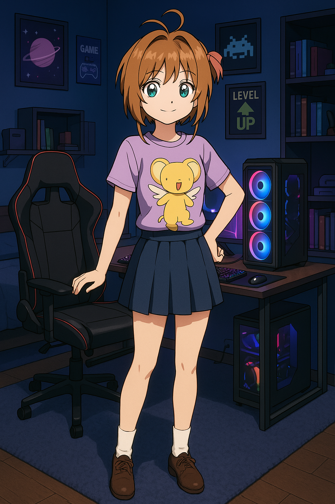
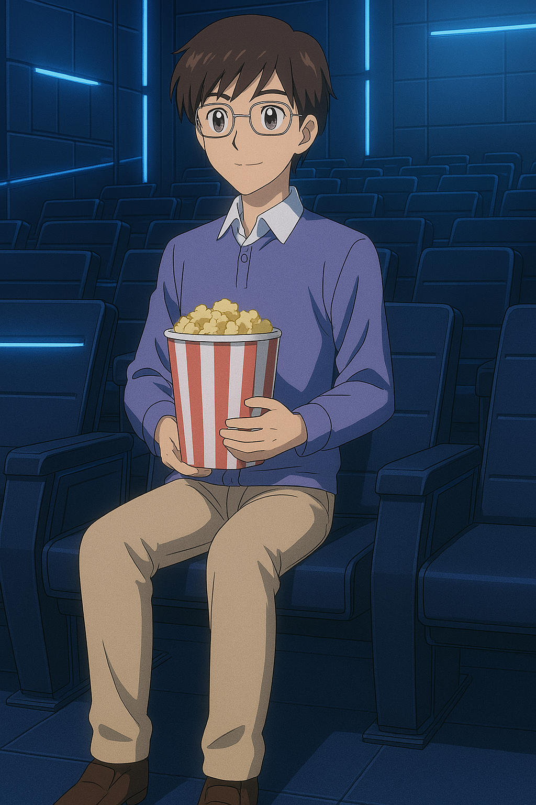

Shoran Li
Shoran Li, conhecido no mundo digital como "Li", é um jogador prodígio especializado em RPG/MMO e MOBBA. Com um intelecto afiado e reflexos rápidos, ele domina os mapas dos jogos como se fossem extensões de sua própria mente.

Tomoyo
Tomoyo Daidouji, conhecida como uma diretora genial que domina o audiovisual. Com um talento nato ela cria vídeos inovadores e incríveis, principalmente que envolvem as conquistas de Sakura.

Sakura
Sakura Kinomoto, conhecida como "Cardcaptor", é uma programadora genial que domina o desenvolvimento de algoritmos e inteligência artificial. Com um talento nato para decifrar padrões, ela cria sistemas inovadores e protege dados sensíveis de ameaças digitais.
Touya
Touya Kinomoto, conhecido como "Touya", é um prodígio na cozinha. Criada pelo pai, ele domina as tecnicas de patisserie como se fossem sua segunda língua. Especialista em cozinha molecular e patisserie.

Yukito
No coração de uma estação cinemas, Yukito Tsukishiro, um grande fã de filmes, busca desvendar um filme perdido há séculos. Dizem que esses filme guarda o segredo para uma tecnologia ancestral capaz de redefinir a historia do audiovisual.